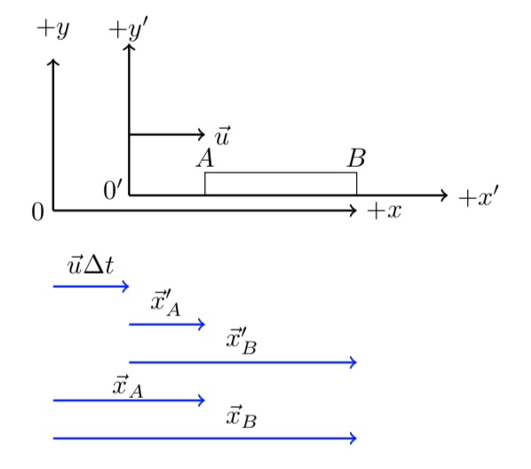

C4.2 Galilean Relativity: Length Measurement#
C4.2.1 Motivation#
We may not put much effort into thinking about how to make a length measurements. However, over-thinking this problem will put us at an advantage when digging into special relativity. In physics, we actually have a very clear definition of what a length measurement is:
The length of an object at rest with respect to an observer is determined by measuring the difference between the spatial coordinates between the two end points. Since the object is at rest, we can perform the two measurements at any time. We call this length measurement the proper lengt.
In contrast, an observer moving relatively to the object must measure the positions of the two end points simultaneously in order to determine the correct length.
Please discuss this concept with your fellow student(s), neighbor, family, and/or friends to make sure you understand it. It would be great to explain it through examples.
C4.2.2#
In the discussion below, we will label the two end points of the object with \(A\) and \(B\) and drop the subscripts \(S\) and \(S'\) as the primed coordinates give away which frame the measurements are observed. Instead, subscripts indicate which end points are measured. We are no longer concerning synchronizing the clocks, but we will consider the same orientation of reference frames.
From the above vector diagram (blue vectors), we have the following:
Observer \(S'\): \(L' = x'_{B} - x'_{A}\), where the two positions can be measured at any time.
Observer \(S\): \(L = x_{B} - x_{A}\), where the two positions must be taken simultaneously.
Based on the above, show that the two observers will measure the same length, that is, show that
HINT: Express \(x'_A\) in terms of \(x_A\) and \(u\Delta t\) and similarly for \(x'_B\).